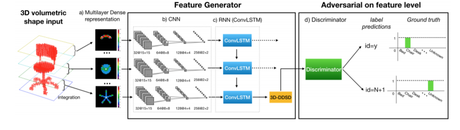
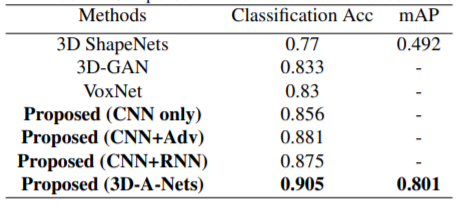
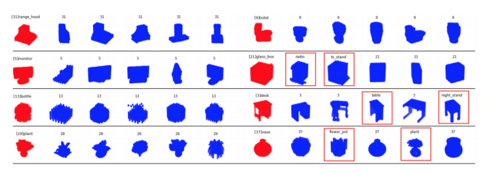

|
MengweiRen |
| Status: | Undergraduate Student |
| Program: | Computer Science and Engineering |
| School: | New York University |
| RA Period: | From 2018-09 to 2019-06 |
| I'm a Ph.D. student at New York University. Before that, I was a research assistant in NYU Multimedia and Visual Computing Lab, advised by Professor Yi Fang. I am broadly interested in 3D Computer Vision, Pattern Recognition and Deep Learning. |
Recently researchers have been shifting their focus towards learned 3D shape descriptors from hand-craft ones to better address challenging issues of the deformation and structural variation inherently present in 3D objects. 3D geometric data are often transformed to 3D Voxel grids with regular format in order to be better fed to a deep neural net architecture. However, the computational intractability of direct application of 3D convolutional nets to 3D volumetric data severely limits the efficiency (i.e. slow processing) and effectiveness (i.e. unsatisfied accuracy) in processing 3D geometric data. In this paper, powered with a novel design of adversarial networks (3D-A-Nets), we have developed a novel 3D deep dense shape descriptor (3D-DDSD) to address the challenging issues of efficient and effective 3D volumetric data processing. We developed new definition of 2D multilayer dense representation (MDR) of 3D volumetric data to extract concise but geometrically informative shape description and a novel design of adversarial networks that jointly train a set of convolution neural network (CNN), recurrent neural network (RNN) and an adversarial discriminator. More specifically, the generator network produces 3D shape features that encourages the clustering of samples from the same category with correct class label, whereas the discriminator network discourages the clustering by assigning them misleading adversarial class labels. By addressing the challenges posed by the computational inefficiency of direct application of CNN to 3D volumetric data, 3D-A-Nets can learn high-quality 3DDSDD which demonstrates superior performance on 3D shape classification and retrieval over other state-of-the-art techniques by a great margin.
Figure 1: Overview of the proposed approach.
The proposed network, 3D Adversarial Network (3DA-Nets), consists of a feature generator G, which tries to learn the distinguishable 3D-DDSD from the input MDR, and a feature-level discriminator D, pursuring the competing goals with G, which attempts to classify all its input 3D-DDSD towards the ‘adversarial’ class, indicating the 3D-DDSD is too ambiguous to be assigned with an explicit class label. Compared with vanilla GANs and other 3D shape related GANs, three major novelties of 3D-A-Nets are as follows. Firstly, the input of G is the newly defined Multilayer Dense Representation (MDR) instead of a random noise z. Compared with 3D voxel volume, MDR is concise but geometrically informative to be better fed into a Neural Network (NN). In addition, to deal with the spatial relationship across slice s in MDR, Recurrent Neural Network (RNN), specifically, Convolutional Long Short Term Memory (ConvLSTM), is introduced into G. RNN takes the feature map sequence extracted by CNN as input, and outputs the 3D-DDSD as a latent space variable (shown in Figure.1). Third, adversarial learning is applied, which encourages G to learn to generate a more distinguishable 3D-DDSD. The feature generator takes MDR (transformed from 3D shape) as input, and generate 3D-DDSD; The discriminator takes 3D-DDSD as input, and produces class label (1 to N represents N predefined class labels, and N+1 represents ‘adversarial’)
Table 1: Comparison with the voxel-based methods.
In this section, a set of experiments were carried out to evaluate performance of the proposed 3D-A-Nets via assessing the quality of the learned 3D-DDSD for shape classification and retrieval. The 3D models used in the experiments were chosen from the Princeton ModelNet40 that contains 12,311 models and 40 categories with imbalance distribution of the number of models in each category. Our method is to compare against other three deep learning methods which were developed to process the 3D volumetric data. Please note that we currently did not compare 3D-A-Nets with projection-based methods that were developed based on using 2D projection views of a 3D model as input of the neural nets (i.e. MVCNN-MultiRes, PANORAMA-NN etc.) for the reason: the 3D models (triangulated mesh format) that are used to produce 2D projection views to feed the above mentioned projection-based methods have much higher resolution than that of 3D models (3D voxel grids format) that were fed to our 3D-A-Nets and other voxelization-based method (i.e. 3D ShapeNets and VoxNet). Table 1 shows the performance comparison between the proposed methods and the state-of-the-art voxel-based methods, namely 3D ShapeNets, 3D-GAN, and VoxNet. As shown in the table, the proposed 3DA-Nets could outperform all the aforementioned methods on Princeton ModelNet40 benchmark with a huge margin. Specifically, the classification accuracy was increased by 7$\%$, compared to the best state-of-the-arts voxel-based results reported by VoxNet. Except for quantitative comparisons against state-of-the-art methods, we also draw precision-recall curve to visualize the performance. Figure 8 shows the precision-recall curve comparison between and 3D-A-Nets. The higher curve indicates better performance. Figure.2) illustrates several retrieved examples. The query models are randomly selected from 8 categories, namely, range hood, monitor, bottle, plant, toilet glass, desk and vase, which are are mark with red color and listed at the left most column. The retrieved objects are listed on the right side based on their ranking orders. In most cases, the proposed methods could retrieve correct objects; however, for some particular cases, such as desk and night stand, which are even very difficult for human to distinguish, the proposed methods retrieve wrong objects. All the irrelevant models are marked with red boxes.
Figure 2: Retrieval samples.